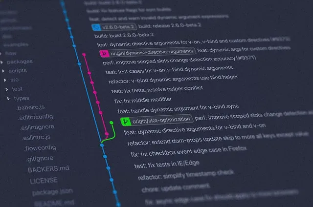

Willkomen bei TECH SAVIOURS .ORG
Wo Privatsphäre wichtig ist
KONTROLLE KOMMT MIT DEM VOLLEN BESITZ EINES EIGENEN:
Hol dir deine Privatsphäre zurück
Der wichtigste Tag, um sich im Internet zu schützen, war gestern, aber die nächstbeste Maßnahme ist heute - überlasse deine digitale Privatsphäre nicht dem Zufall!
Server
Dein eigener Server - für deine persönlichen Daten.

Telefon
Halte deine Kommunikation verschlüsselt,
sicher und unauffindbar.
Die Wiki ist noch in bearbeitung.
Folge den Tutorials
Nehme deine digitale Privatsphäre selbst in die Hand.
Direkt zur Wiki
-
Dein eigener Server
Zentralisiere deine IT-Verwaltung, schütze deine wertvollen Informationen, und mache dein Zuhause (oder dein Unternehmen) effizienter und privater.
Betriebssysteme Services
-
Dein eigenes Telefon
Hole dir dein Eigentum an deinem eigenen Telefon zurück und lösche alle unerwünschten Anwendungen.
Betriebssysteme Apps (Android)
-
Dein eigener computer
Überspringe den Mainstream und installiere nur das, was du wirklich brauchst.
Betriebssysteme Services
- OpenSSH
- crontab
- borg
- rsync
- syncthing
- DNSCrypt
- Searx
- AUR-Helper
- Browser (Firefox, Librewolf, Tor & Pale Moon)
-
Deine eigenen Extras
Was kann das sein?
-
Deine
Privatsphäre
ist wichtig!
Freie Services
Du kannst unsere Dienste gerne benutzen.
Matrix & Jitsi
Dein verschlüsselter Messenger und VideokonferenzMatrix ist ein Open-Source-Projekt, das den Matrix Offenen-Standard für sichere, dezentralisierte Echtzeitkommunikation und seine Apache-lizenzierten Referenzimplementierungen veröffentlicht.
Jitsi ist eine Sammlung von freien und quelloffenen Multiplattform-Sprach-, Videokonferenz- und Instant-Messaging-Anwendungen für die Web-Plattform Windows, Linux, MacOS, iOS und Android.
Matrix und Jitsi
DNSCrypt & Unbound
Dein verschlüsselter DNS-ServerDNSCrypt ist ein Netzwerkprotokoll, das den DNS-Verkehr (Domain Name System) zwischen dem Computer des Benutzers und rekursiven Nameservern authentifiziert und verschlüsselt.
Enthält Anonymized DNS.
Unbound ist ein validierender, rekursiver und zwischenspeichernder DNS-Resolver.
Es beinhaltet auch DNSSEC.
Connect
Searx
Deine Privatsphäre-Respektierende MetasuchmaschineSearx ist eine kostenlose Internet-Metasuchmaschine, die Ergebnisse von mehr als 70 Suchdiensten zusammenführt.
Die Benutzer werden weder verfolgt noch einem Profil zugeordnet. Zusätzlich kann searx über Tor zur Online-Anonymität genutzt werden.
Beginne mit searx, indem du unsere Searx-instance, deiner eigenen oder eine der anderen Searx-instances benutzt.

Gitea ist eine von der Community verwaltete, leichtgewichtige Code-Hosting-Lösung, die in Go geschrieben wurde. Sie wird unter der MIT-Lizenz veröffentlicht.
Join
Gitea
Dein schmerzloser, selbst gehosteter Git-DienstGitea ist eine von der Community verwaltete, leichtgewichtige Code-Hosting-Lösung, die in Go geschrieben wurde. Sie wird unter der MIT-Lizenz veröffentlicht.
Join